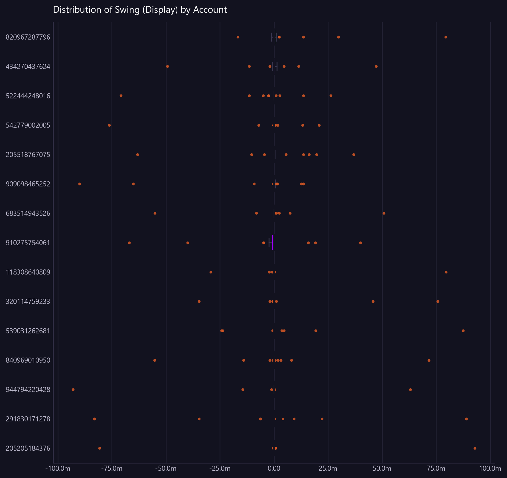

Distribution of Swing (Display) by Account
Accounts ranked by how much their daily balance swings. Volatile balances are where buffers are set and forecasting is hardest.
Asked as Which client accounts have the most volatile daily balance swing? Show the spread of their daily swing, largest first.

Box shows the middle 50% of values, the line inside is the median, and the dots are outliers beyond 1.5x the interquartile range.
Commentary
The report identifies client accounts with the most volatile daily balance swings, ranked by the spread of their daily swings. The account with the largest swing is 291830171278, showing a maximum swing range from -83,009,992.37 to 88,886,454.01, with a standard deviation of 28,134,547.30. Notably, account 205205184376 also exhibits significant volatility, with a range from -80,741,446.91 to 92,896,812.62 and a standard deviation of 26,852,240.17. Operations should closely monitor these accounts due to their high volatility, which could impact liquidity management.
| Account | count | mean | median | std | min | max |
|---|---|---|---|---|---|---|
| 291830171278 | 22.00 | 35,004.65 | 0.00 | 28,134,547.30 | -83,009,992.37 | 88,886,454.01 |
| 205205184376 | 22.00 | 626,694.84 | 0.00 | 26,852,240.17 | -80,741,446.91 | 92,896,812.62 |
| 944794220428 | 22.00 | -2,070,961.49 | 0.00 | 24,622,423.63 | -92,930,034.48 | 63,066,025.42 |
| 849109355298 | 22.00 | 9,115,596.23 | 0.00 | 24,002,943.57 | -15,558,342.95 | 72,776,105.60 |
| 909098465252 | 22.00 | -6,139,568.63 | 0.00 | 23,838,052.75 | -89,918,456.29 | 13,669,728.29 |
| 539031262681 | 22.00 | 3,027,443.65 | 0.00 | 20,717,707.62 | -24,237,989.77 | 87,507,932.44 |
| 320114759233 | 22.00 | 3,873,266.21 | 0.00 | 20,353,372.35 | -34,596,831.63 | 75,705,587.08 |
| 840969010950 | 22.00 | 630,596.92 | 0.00 | 20,066,868.76 | -55,203,907.49 | 71,652,945.73 |
| 910275754061 | 22.00 | -2,062,229.50 | 0.00 | 19,835,916.14 | -67,029,820.90 | 39,940,515.19 |
| 555572694805 | 22.00 | 6,351,868.93 | 0.00 | 19,214,341.27 | -5,993,655.77 | 79,658,377.98 |
| 225430746975 | 22.00 | 4,363,946.91 | 0.00 | 18,755,348.12 | -347,398.74 | 88,011,538.05 |
| 967624358937 | 22.00 | 3,538,532.76 | 0.00 | 18,709,644.54 | -8,148,360.98 | 86,929,125.15 |
| 820967287796 | 22.00 | 4,996,493.58 | 3,729.24 | 18,412,630.56 | -16,653,686.67 | 79,395,887.73 |
| 118308640809 | 22.00 | 2,169,885.16 | 761.63 | 18,383,393.77 | -29,243,500.07 | 79,619,914.62 |
| 389836464400 | 22.00 | 4,168,791.46 | 0.00 | 18,289,408.64 | -1,383,483.86 | 85,894,358.50 |
| 947625227984 | 22.00 | 5,038,719.77 | 23,668.68 | 17,889,181.38 | -2,078,441.11 | 83,057,533.27 |
| 263732603516 | 22.00 | -4,331,517.94 | 0.00 | 17,802,663.57 | -83,769,596.65 | 139,831.05 |
| 793184613977 | 22.00 | 2,084,933.71 | 0.00 | 17,688,340.10 | -33,964,121.22 | 61,091,181.44 |
| 385672994728 | 22.00 | -3,734,730.09 | 0.00 | 17,675,120.32 | -82,584,041.45 | 5,090,611.83 |
| 542779002005 | 22.00 | -2,137,356.17 | 0.00 | 17,421,309.71 | -76,221,726.21 | 20,901,115.74 |
| 714506164459 | 22.00 | -2,913,312.37 | 0.00 | 17,410,722.19 | -79,234,036.86 | 15,481,123.11 |
| 205518767075 | 22.00 | 683,930.76 | 0.00 | 17,359,106.39 | -63,087,440.66 | 36,862,515.54 |
| 118234992610 | 22.00 | 3,438,421.70 | 0.00 | 17,234,030.56 | -4,665,527.34 | 80,146,247.80 |
| 921847628421 | 22.00 | 3,187,165.81 | 523.98 | 17,010,076.42 | -16,415,683.02 | 77,495,656.24 |
| 845072216498 | 22.00 | 3,808,328.06 | 0.00 | 16,996,540.55 | -23,943,134.56 | 44,036,573.27 |
Limitations of this view
- Showing the 25 most variable of 900 groups, by standard deviation.
- The view is scoped to the value date range from 2026-07-20 to 2026-08-18.
- The Swing (Display) is calculated using static synthetic FX rates.
- Data classification: synthetic, non-production.
Downloads
{kind=link}
The Markdown documents everything considered, so a reader can hand it to an AI and ask follow-up questions about this view.
How this was produced
{
"view": "client",
"sheet": "Client View",
"source_file": "synthetic_liquidity_month.xlsx",
"mode": "distribution",
"filters": [],
"group_by": [],
"time_bucket": null,
"measures": [
"distribution of Swing (Display)"
],
"columns": [],
"sort_by": "Swing (Display)",
"limit": 10,
"join": null,
"derived": [],
"currency_corrections": [
"Showing the 25 most variable of 900 groups, by standard deviation."
],
"data_as_of": null,
"measure": "Swing (Display)",
"aggregation": "distribution",
"rows_in_view": 19800,
"rows_after_filters": 19800,
"rows_returned": 25,
"executed_at": "2026-08-20T11:29:26"
}